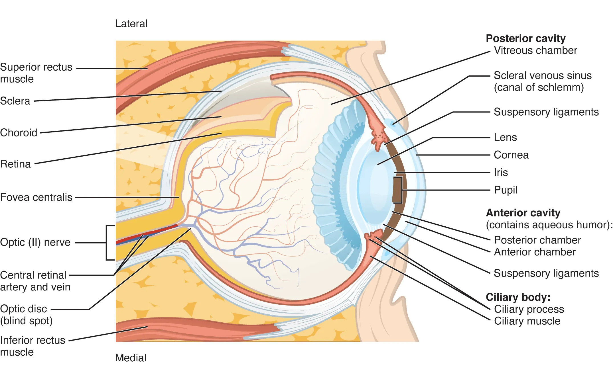
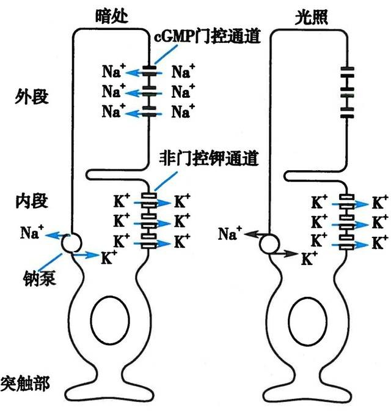

高中生物竞赛讲义 · 集训营
第十章 人及哺乳动物的形态和解剖结构
第十二节 感觉器官 · 二、视觉器官——眼
📅 整理日期: 2026年7月4日
二、视觉器官——眼
（一）眼球壁
外膜（纤维膜）
：角膜（前1/6，透明，有屈光作用）+ 巩膜（后5/6，白色不透明，保护作用）
中膜（血管膜）
：虹膜（中央瞳孔，调节进光量）+ 睫状体（含睫状肌，调节晶状体曲度）+ 脉络膜（营养眼球）
内膜（视网膜）
：感光细胞层——
视锥细胞
（感色觉，强光，中央凹密集）和
视杆细胞
（感光觉，弱光，周边部密集）

图1：眼球结构（来源：OpenStax Anatomy and Physiology 2e, Figure 14.15, CC BY-NC-SA 4.0）

视网膜光转导：视紫红质活化后通过 G 蛋白-磷酸二酯酶级联降低 cGMP，关闭阳离子通道。来源：教师授课PPT（暂无比照度更高的开放版权替代图）
（二）眼球内容物
房水
：充满前房和后房，营养角膜和晶状体，维持眼内压
晶状体
：富有弹性的双凸透镜，借悬韧带连于睫状体，调节焦距
玻璃体
：胶状物质，充填眼球后腔，维持眼球形状
（三）眼的折光系统
折光系统：
角膜 → 房水 → 晶状体 → 玻璃体
视觉调节：
近距离视物：睫状肌收缩 → 悬韧带松弛 → 晶状体变凸 → 折光力增强
瞳孔反射：强光 → 瞳孔缩小；弱光 → 瞳孔扩大
常见折光异常——近视（眼球前后径过长，物像落在视网膜前，用凹透镜矫正）；远视（前后径过短，物像落在视网膜后，用凸透镜矫正）；散光（角膜表面曲率不均，用柱面镜矫正）。
（四）眼附属器
眼睑、结膜、泪器（泪腺分泌泪液）、眼外肌（6条，使眼球运动）。